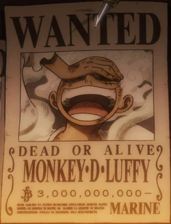
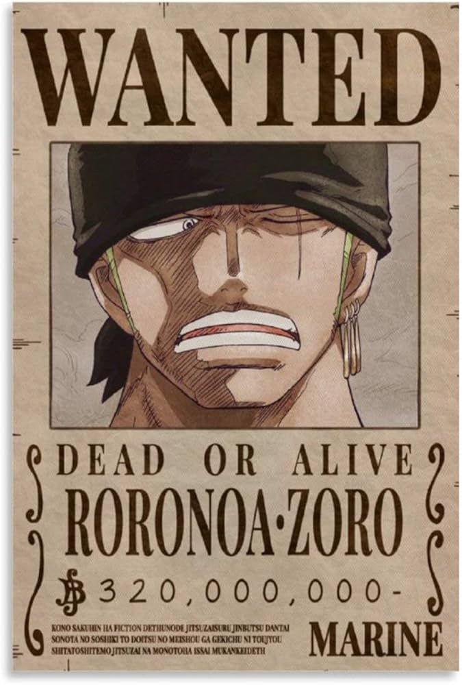
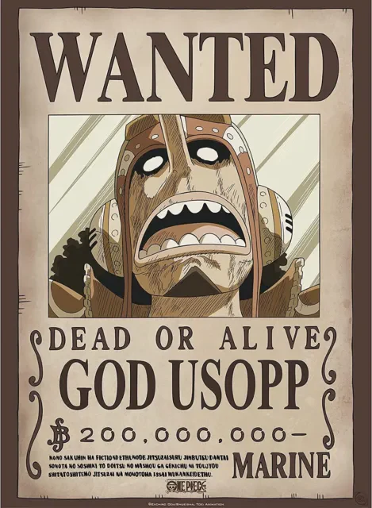
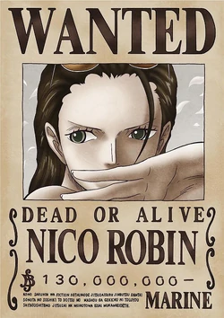

La ciurma di cappello di paglia che domina le classifiche dei manga più
venduti da ormai due decenni.
Monkey D. Rufy

Rufy è un ragazzo il cui corpo ha acquisito le proprietà della gomma
dopo aver inavvertitamente ingerito un frutto del diavolo
grazie a ciò può eseguire una vasta gamma di attacchi accumulando
energia nel proprio corpo e sfruttando l'elasticità dei suoi arti
tale frutto è inizialmente presentato con il nome di Gom Gom ma nel
corso della trama si scopre la sua reale natura, ossia quella
dell'Homo Homo modello Nika, che permette a Rufy di trasformarsi
nell'omonimo guerriero leggendario e di acquisirne i poteri
Per inseguire il suo sogno di trovare il leggendario tesoro One Piece
appartenuto a Gol D. Roger e diventare il Re dei pirati, egli salpa
dal suo villaggio nel Mare Orientale e si mette in viaggio attraverso
la Rotta Maggiore, raccogliendo intorno a sé una ciurma, conosciuta
come i pirati di Cappello di paglia, e affrontando numerosi nemici.
Roronoa Zoro

Entra a far parte della ciurma di Cappello di paglia come primo membro
dopo che Monkey D. Rufy lo salva dall'esecuzione da parte del capitano
della Marina Morgan.
Nativo del Villaggio di Shimotsuki nel Mare Orientale, Zoro si è
allenato fin dall'infanzia all'uso della spada,
sviluppando un peculiare stile di combattimento a tre spade,
reggendone una con la bocca. Il suo sogno è di diventare il più grande
spadaccino del mondo.
Nami
È una ladra che incrocia il cammino di Monkey D. Rufy e della sua
ciurma nel Mare Orientale.
Inizialmente una subordinata di Arlong, con la sconfitta
dell'uomo-pesce Nami
entra definitivamente a far parte della ciurma di Cappello di paglia
in qualità di navigatrice. I
Il suo sogno è di disegnare una mappa perfetta del mondo, impresa mai
compiuta a causa della rigida natura della Rotta Maggiore.
God Usopp

È il quarto personaggio a diventare membro della ciurma di Cappello di
paglia,
deciso a diventare un coraggioso guerriero del mare per rendere fiero
il padre Yasop.
Appare bugiardo e codardo, ma all'occorrenza sa compiere atti di
coraggio per ricompensare la fiducia
che i compagni ripongono in lui. È un provetto cecchino dalla mira
infallibile, un grande inventore e anche un discreto carpentiere e
disegnatore. In combattimento ricorre ad una grossa fionda.
Vinsmoke Sanji
Inizialmente un cuoco sul ristorante galleggiante Baratie,
Sanji entra a far parte della ciurma di Cappello di paglia dopo aver
assistito allo scontro tra Monkey D. Rufy e Creek,
ncoraggiato dai suoi colleghi e dal suo mentore Zef a prendere il mare
per inseguire il suo sogno di trovare il leggendario All Blue. Per
preservare le sue mani per cucinare, egli combatte ricorrendo
esclusivamente alle sue gambe.
Accanito fumatore, è estremamente galante e attratto dal gentil sesso.
Durante gli eventi di Zo e di Tottoland, viene rivelata la sua
appartenenza alla famiglia Vinsmoke, un clan di assassini
geneticamente modificati.
Tony Tony Chopper
È una renna che ha ingerito il frutto del diavolo Homo Homo
acquisendo così aspetto e comportamenti umani e l'abilità di parlare.
Cresciuto come medico sull'isola di Drum,
decide di unirsi alla ciurma di Cappello di paglia per espandere i
suoi orizzonti e vedere il mondo[4]. Il suo sogno è trovare una cura a
tutte le malattie.
Nico Robin

Inizialmente è una nemica dei protagonisti e ricopre il ruolo di
vicepresidente
nell'organizzazione criminale Baroque Works con il nome in codice di
Miss All Sunday
Dopo aver tradito il suo capo Crocodile, tuttavia, diventa il settimo
membro della ciurma di Cappello di Paglia.
Robin è un'archeologa in grado di leggere l'antica lingua; il suo
sogno è decifrare il Real Poignee Griffe per fare luce sul mistero dei
Cento anni del grande vuoto.
Franky
l suo vero nome è Cutty Flam d era un tempo allievo di Tom.
Venne investito nel tentativo di arrestare il treno marino Puffing
Tom, sul quale il suo maestro
eniva condotto via per essere giustiziato, e per sopravvivere fu
costretto a modificare il proprio corpo,
rasformandosi in un cyborg. In seguito diviene il boss della Franky
Family, un'organizzazione di smantellatori di navi. Il suo sogno è
quello di costruire una nave in grado di solcare qualsiasi mare.
È il carpentiere della ciurma di Cappello di paglia, nonché il
costruttore della loro seconda nave, la Thousand Sunny.
Brook
Un tempo membro dei pirati Rumbar venne ucciso insieme ai suoi
compagni,
ma tornò in vita grazie al potere del frutto del diavolo Yomi Yomi,
ricongiungendosi al suo corpo quando questo
era ormai ridotto a uno scheletro. Dopo che Monkey D. Rufy lo aiuta a
recuperare la sua ombra
sottrattagli dal membro della Flotta dei Sette Gekko Moria, Brook si
unisce alla ciurma di Cappello di paglia. È un musicista di talento e
un esperto schermidore.
Il suo sogno è ricongiungersi con la balena Lovoon, che i pirati
Rumbar avevano dovuto abbandonare all'ingresso della Rotta Maggiore.
Jinbe
è un uomo-pesce di tipo squalo balena noto con il soprannome "Il
cavaliere del mare"
È uno dei massimi esperti del karate degli uomini-pesce, ma nonostante
la sua forza è un individuo molto umile
e dotato di un grande senso dell'onore; durante la fuga da Tottoland
si è rivelato anche un eccellente timoniere.